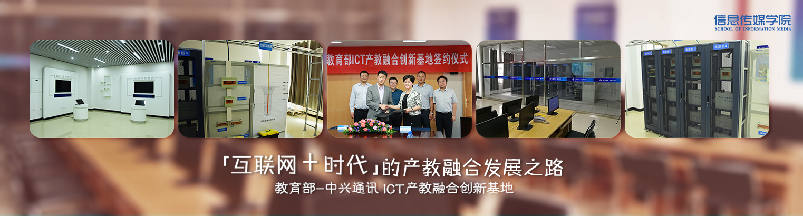
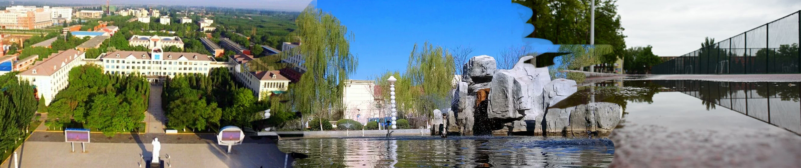

 
信息传媒学院创建于2004年，前身为计算机与信息工程学院，经过十余年的建设，学院引进和培养了一批教学能力强、专业素养高的师资队伍，通过与多家企业构建战略合作关系，使学院进入了发展的快车道。2015年，学院结合专业设置和社会对人才需求的特点，正式更名为信息传媒学院。
学院目前现有本、专科学生1300余人，开设有数字媒体技术、信息管理与信息系统、物联网工程、通信工程、数据科学与大数据技术等5个本科专业和数字媒体应用技术、计算机应用技术等2个专科专业。现有教职工37人，其中副高以上职称6人，硕士以上学历18人，双师双能型教师比例达80%。是银川能源学院最年轻、最具活力和最具发展潜力的二级学院之一。
学院目前现有本、专科学生1300余人，开设有数字媒体技术、信息管理与信息系统、物联网工程、通信工程、数据科学与大数据技术等5个本科专业和数字媒体应用技术、计算机应用技术等2个专科专业。 现有教职工37人，其中副高以上职称6人，硕士以上学历18人，双师双能型教师比例达80%。 是银川能源学院最年轻、最具活力和最具发展潜力的二级学院之一。
让 优 秀 成 为 一 种 习 惯
信息传媒学院创建于2004年，前身为计算机与信息工程学院，经过十余年的建设，学院引进和培养了一批教学能力强、专业素养高的师资队伍，通过与多家企业构建战略合作关系，使学院进入了发展的快车道。2015年，学院结合专业设置和社会对人才需求的特点，正式更名为信息传媒学院。